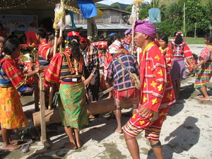
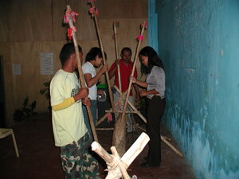
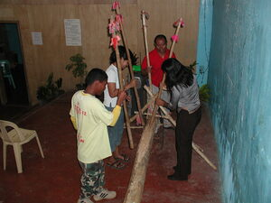

bangkakew1   
/baŋkakɔw/
n.
a long musical drum (made from a hollowed log)
Eng. drum
Online dict status: -
Usage level: M
v.
for someone, usually a man (egbebangkakew, migbebangkakew/imbebangkakew, agent, eg><ø-rdpCV-) to pound a rhythm on a sounding board made from a log suspended at each end by ropes (egbangkakawan, imbangkakawan/migbangkakawan/pigbangkakawan, location, eg><an-) with a short stick (approx. one foot long) (igbangkakew, imbangkakew, instrument, ig><ø-)
Wrd.Gloss: drum
Iyan sika ka pegbebasal wey pegbibinayu te kayu ne imbitin ne me daruwa ne depa ka kalayatan. Lalimma peendiyè te hen-em ne etew ka egkaayun ne egsesayew wey eggimu te iling dutu. Ka me malitan iyan eggen-gen te me andu ne due palakpak ne senge depa peendiyè te senge depa wey liwarè se kalayat wey ka me lukes ka eggen-gen te basal ne daruwa ne dangew peendiyè te talelu se kalayatan.
Mangateu ne egbebangkakew ka me buyag piru ka me batè kuntee kenad iya egkengateu.
The elders are very expert on playing long musical drum but young people never do today.
Egkuwa ki pad te kayu ne palesungan eyew egbangkakawan ta.
We will get a log as our mortar for pounding to play long musical drum made of wood.
Iyan ta igbangkakew ne kayu ka mabasag eyew kenè egkahepù.
We will used hard kind of wood sticks for playing this musical instrument so that it will not be breakable.
cf. pulapul
Eng. drum; pound drum; beat drum; rhythm
Online dict status: -
Usage level: M
Updated by: RJH,RJH,RJH,TME,QDL,QDL
Last updated: 02/Dec/2009
This page last updated: 28-Dec-2019
Copyright © 2009-2014, Matigsalug Language Christian Association, Inc